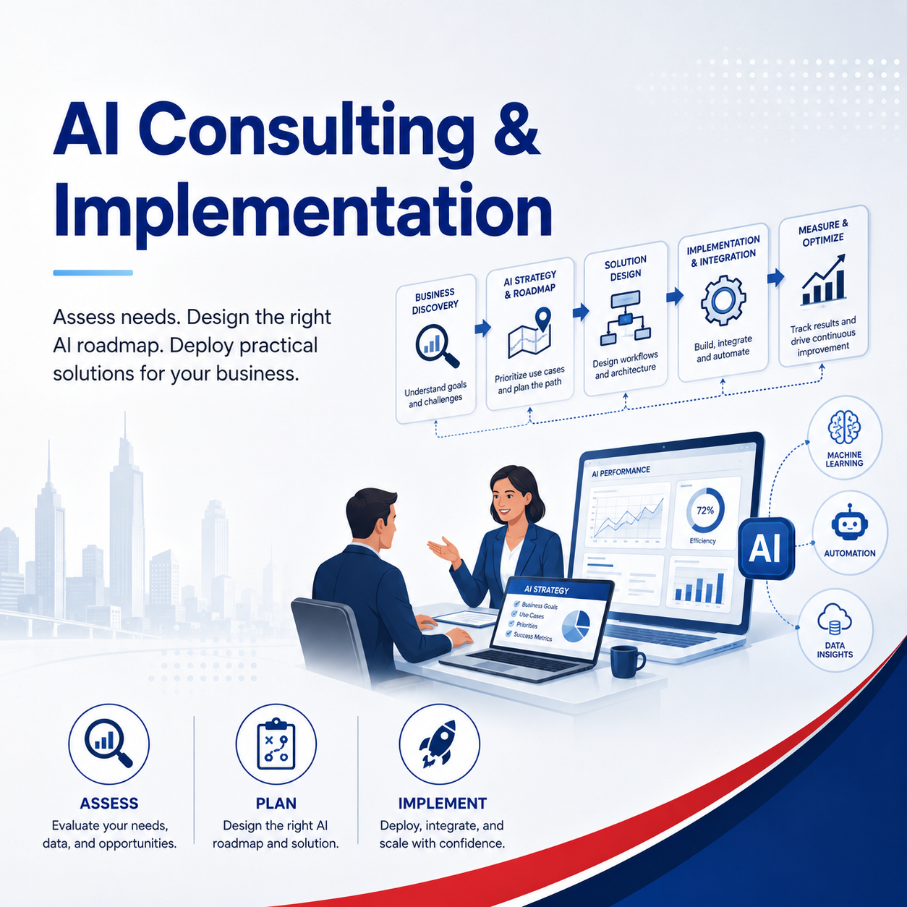

AI chatbot for enquiries
Help visitors ask questions, understand services and contact the right person without making the site feel complicated.
AI is useful only when it solves a real business problem. Axon helps non-IT owners decide where AI should be used, what should stay manual and how to avoid wasting time on tools that do not fit.

Help visitors ask questions, understand services and contact the right person without making the site feel complicated.
Use AI to support service pages, FAQs, blogs and business explanations while keeping the company voice accurate.
Plan how staff can use AI while keeping useful company knowledge organized and reusable.
Identify practical automation for enquiries, reports, emails, quotes, invoices and internal workflows.
Axon starts with your business process, staff habits and customer journey before recommending AI tools or automation.